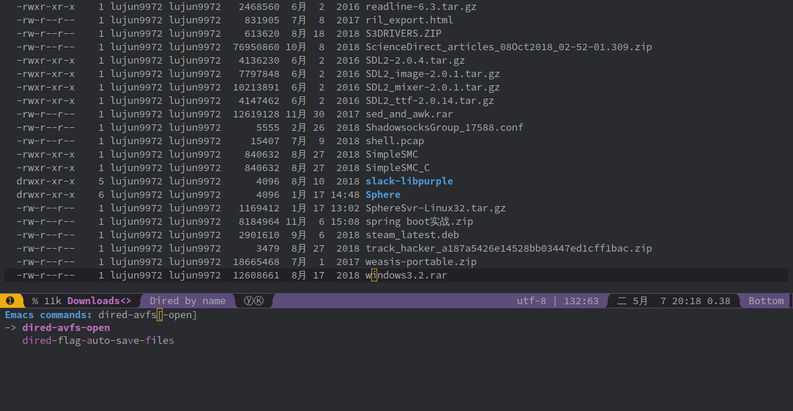
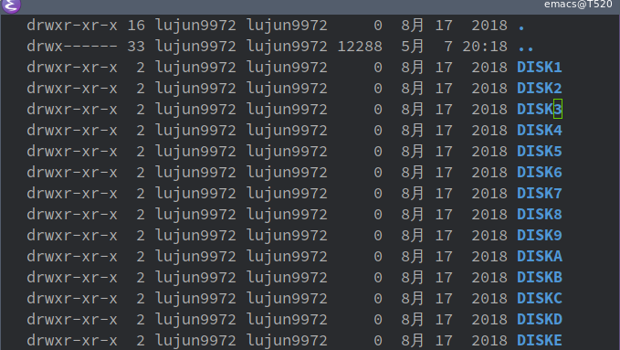

使用avfs直接挂载压缩文件
一直以来要读取压缩文件中的内容都是先把压缩文件解压，然后在访问里面的内容，在用完了之后再把压缩文件删除掉，或者把原压缩包删除掉。
这些操作不仅繁琐，而且解压文件后占用的磁盘空间也比较大，很可能有一个很大的压缩包，而我真正想要的只是里面的一个小文件，这样解压不仅浪费时间也浪费空间。
但是今天发现一个很棒的工具: avfs, 它可以直接把压缩文件挂载成目录！
使用方法很简单:
安装avfs
sudo pacman -S avfs --noconfirm
resolving dependencies... looking for conflicting packages... Packages (1) avfs-1.0.6-1 Total Installed Size: 0.73 MiB Net Upgrade Size: 0.00 MiB :: Proceed with installation? [Y/n] (0/1) checking keys in keyring [----------------------] 0% (1/1) checking keys in keyring [######################] 100% (0/1) checking package integrity [----------------------] 0% (1/1) checking package integrity [######################] 100% (0/1) loading package files [----------------------] 0% (1/1) loading package files [######################] 100% (0/1) checking for file conflicts [----------------------] 0% (1/1) checking for file conflicts [######################] 100% (0/1) checking available disk space [----------------------] 0% (1/1) checking available disk space [######################] 100% :: Processing package changes... (1/1) reinstalling avfs [----------------------] 0% (1/1) reinstalling avfs [######################] 100% :: Running post-transaction hooks... (1/1) Arming ConditionNeedsUpdate...
在$HOME下创建目录
.avfsmkdir ~/.avfs
运行命令
mountavfsmountavfs
注意，你无需使用sudo就能直接运行
在
~/.avfs中访问压缩包若你想访问
/path/to/compressed/file,那么你可以直接访问~/.avfs/path/to/compress/file#/就能看到压缩包中的内容了(注意文件名最后的#)。比如ls $HOME/Downloads/windows3.2.rar cd ~/.avfs/$HOME/Downloads/windows3.2.rar# pwd ls
/home/lujun9972/Downloads/windows3.2.rar /home/lujun9972/.avfs/home/lujun9972/Downloads/windows3.2.rar# DISK1 DISK2 DISK3 DISK4 DISK5 DISK6 DISK7 DISK8 DISK9 DISKA DISKB DISKC DISKD DISKE
与Dired配合
Dired是Emacs中用来进行文件管理的插件，通过 dired-avfs 插件，可以让Dired直接通过avfs打开压缩的文件
- 首先也是需要先运行
mountavfs 然后将光标移动到压缩文件上后，执行
dired-avfs-open
然后就会发现进入压缩文件所表示的目录了
